全部用例时序图
UC-01 维护业务系统与权限目录
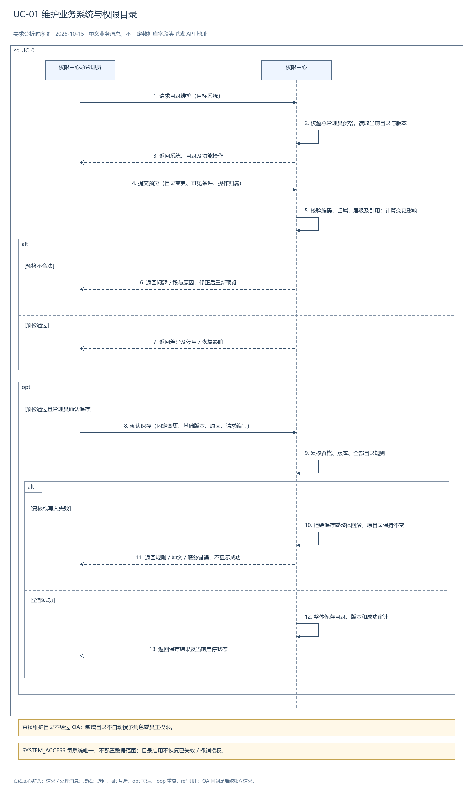
UC-02 创建角色并配置权限
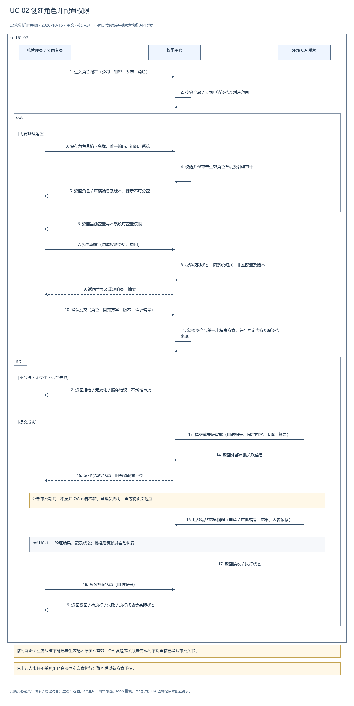
UC-03 为员工分配角色
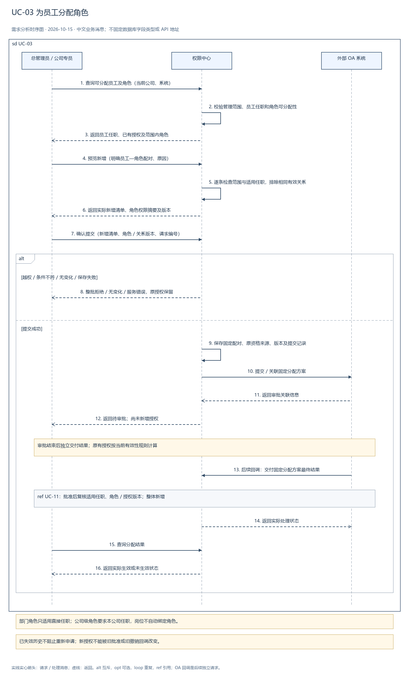
UC-04-离岗关权 关闭原部门来源权限（UC-04 配套）
尚未生成此页图片，请打开同用例的 drawio 图源。
UC-05 查询员工有效权限
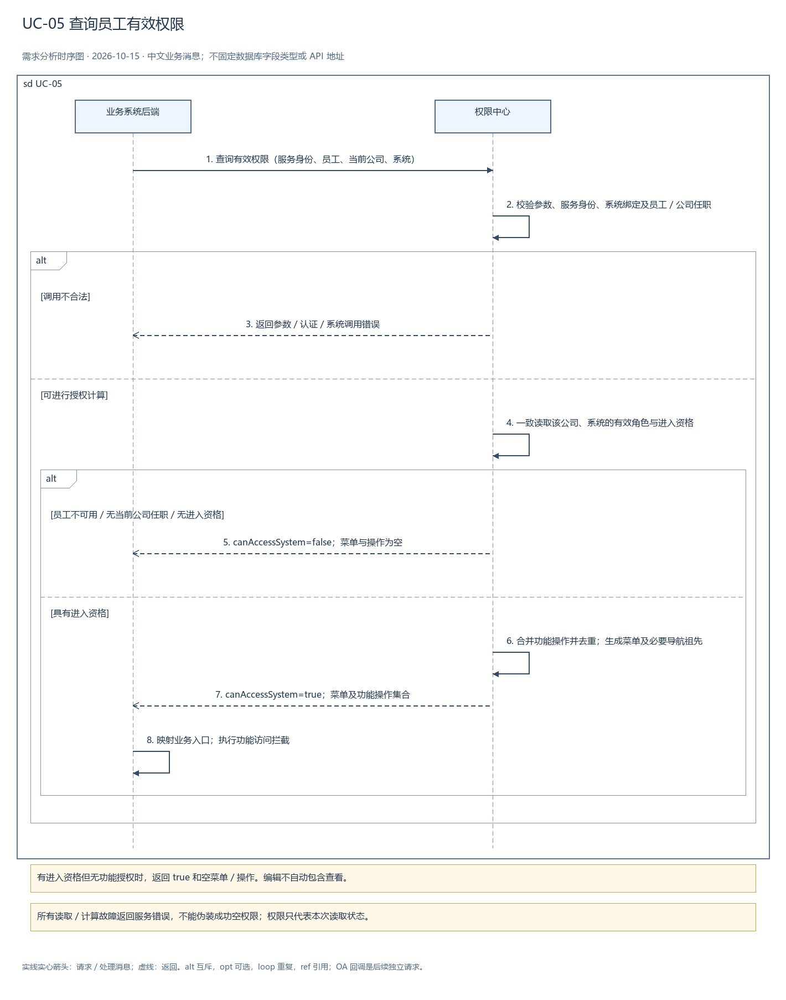
UC-06 检查员工指定操作权限
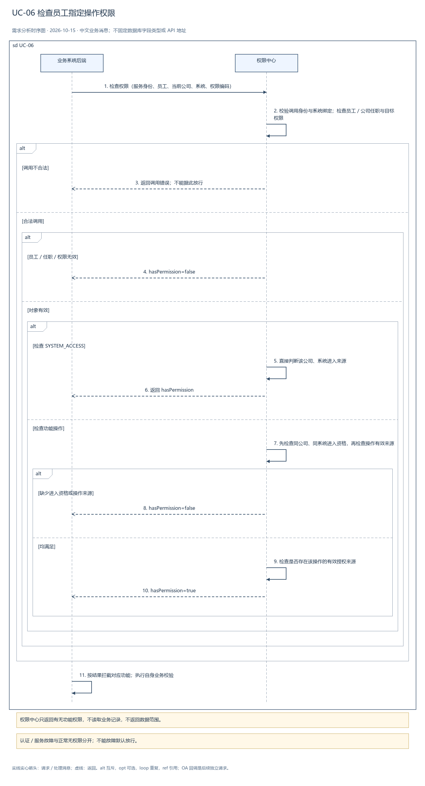
UC-07 配置管理员及管理范围
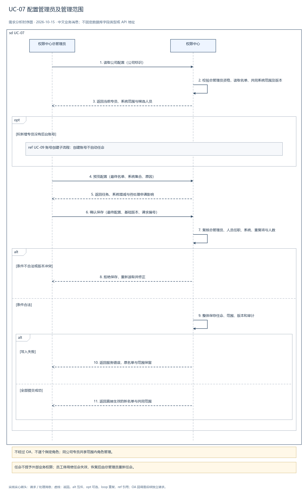
UC-08 查询授权审计记录
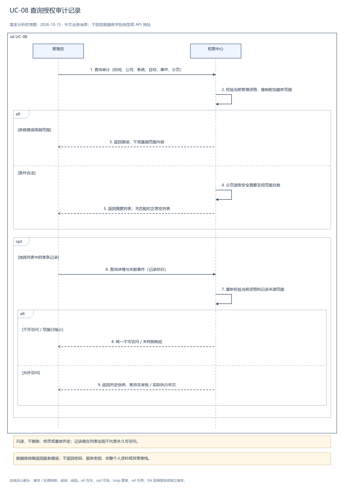
UC-09 管理员登录与退出
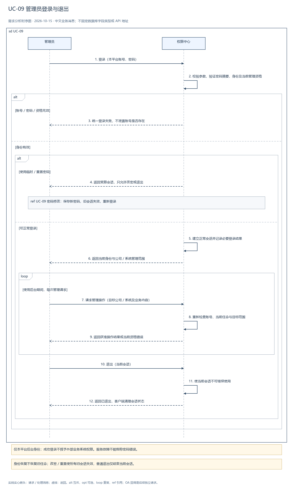
UC-09-账号创建 创建权限管理员后台账号（UC-09 配套）
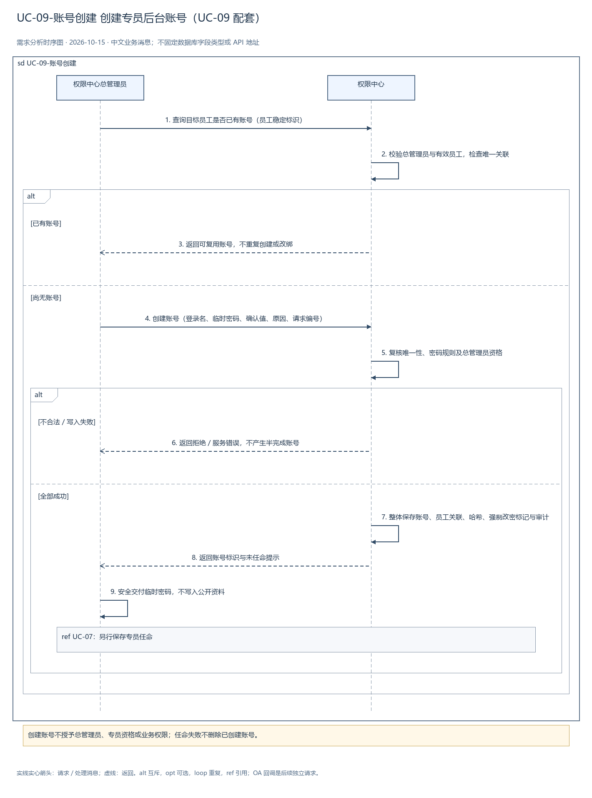
UC-09-密码修改 修改临时／本人密码（UC-09 配套）
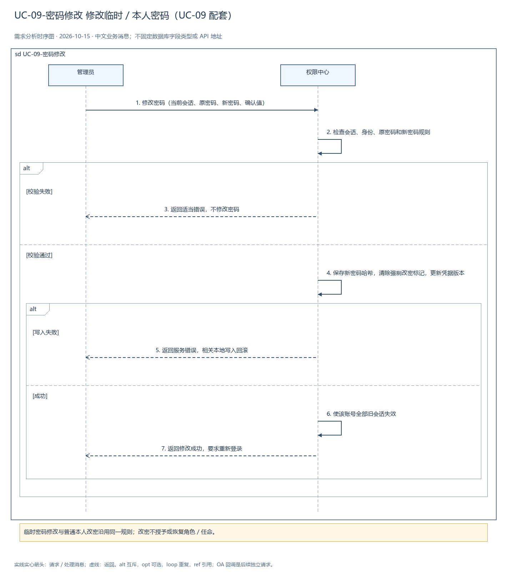
UC-09-密码重置 重置权限管理员密码（UC-09 配套）
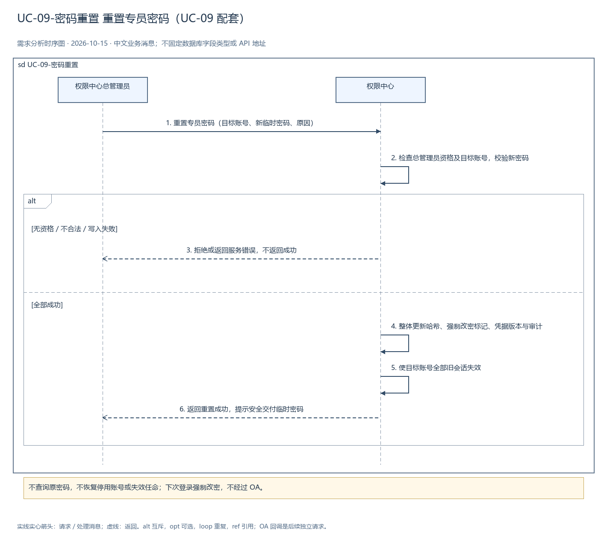
UC-09-账号启停 后台账号启停（UC-09 配套）
尚未生成此页图片，请打开同用例的 drawio 图源。
UC-10 导入／同步员工组织信息

UC-10-全局员工启停 全局员工启停（UC-10 配套）
尚未生成此页图片，请打开同用例的 drawio 图源。
UC-11 接收审批结果并执行权限变更
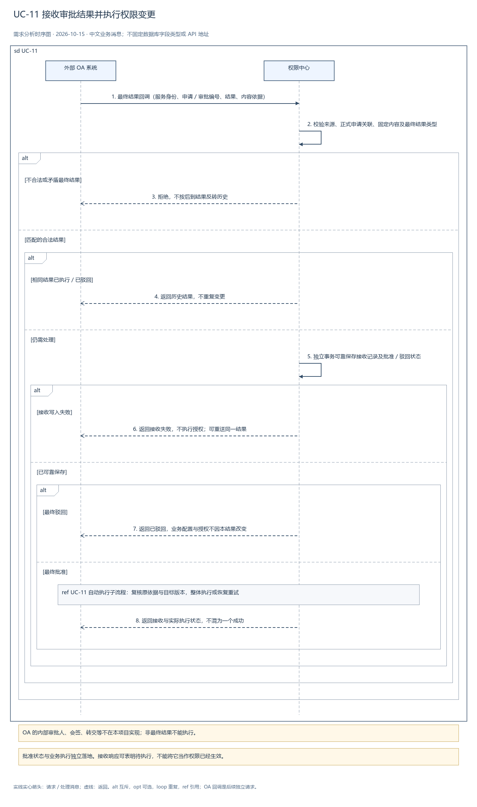
UC-11-自动执行 批准后自动执行与失败恢复（UC-11 配套）
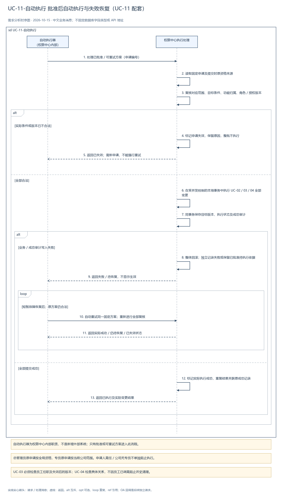